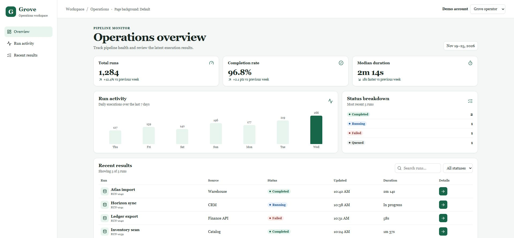

Brand style runtime
공통 디자인 토큰을 유지하면서 등록된 브랜드의 색상, 글꼴, 배경을 전환하는 네 가지 방식을 비교했습니다.
대표 화면
CSS Modules + React Context + CSS 변수
초기 자산이 가장 작고, 브랜드 전환 시 CSS 규칙을 추가하지 않습니다. 새 모달 토큰을 연결할 때 후보 코드에서 수정한 곳도 한 곳이었습니다.

성능과 빌드 크기
좁은 화면에서는 표를 가로로 스크롤해 모든 항목을 볼 수 있습니다.
| 후보 | 초기 JS+CSS gzip |
Vite 빌드 중앙값 |
개발 중 색상 수정 첫 반영 중앙값 |
브랜드 전환 스타일 정착 중앙값 |
새 브랜드 추가 CSS 규칙 |
|---|---|---|---|---|---|
| CSS Modules + React Context | 76,785 B | 881 ms | 36 ms | 16.7 ms | 0 |
| styled-components | 86,960 B | 881 ms | 46 ms | 16.6 ms | 73 |
| Tailwind CSS | 80,599 B | 915 ms | 56 ms | 16.6 ms | 0 |
| shadcn/ui + Tailwind | 94,830 B | 944 ms | 179 ms | 166.8 ms | 0 |
2026-11-25 로컬 Chrome과 단일 페이지 Vite 빌드 측정입니다. 빌드 시간 범위는 서로 겹쳤습니다. shadcn/ui 결과에는 버튼의 150 ms 색상 전환 효과가 포함됩니다.
후보별 장단점
| 후보 | 장점 | 비용과 제약 |
|---|---|---|
| CSS Modules + React Context |
파일 단위로 스타일을 격리하고 기존 디자인 토큰을 CSS 변수로 연결하기 쉽습니다. | 컴포넌트 변형과 포커스 등 상태별 CSS를 직접 관리합니다. |
| styled-components | 타입이 있는 테마와 props를 받아 스타일 규칙을 직접 계산할 수 있습니다. | 이 구현은 새 브랜드에서 CSS 규칙을 생성하며, 런타임 라이브러리가 JS 번들에 포함됩니다. |
| Tailwind CSS | 기존 유틸리티와 토큰을 활용해 반응형·상태 스타일을 조합하기 쉽습니다. | 시맨틱 토큰 매핑과 클래스 탐지 범위를 관리해야 합니다. |
| shadcn/ui + Tailwind | Button, Card, Badge처럼 요구에 맞는 컴포넌트의 소스와 사용 패턴을 재사용할 수 있습니다. | 가져온 컴포넌트의 기본 스타일과 전환을 디자인 시스템에 맞추고 변경 사항을 직접 관리합니다. |